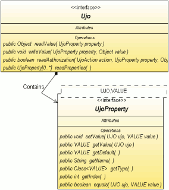

Návod pro použití knihovny Ujorm.
 Obsah
Obsah
Co je UJO ?

Ujorm je Java knihovna, která poskytuje netradiční architekturu objektů
odlišných od JavaBeans. Původní nápad vznikl jako hříčka s generickými datovými typy Java 5.0,
postupem času se však ukázalo, že architektura má několik zajímavých vlastností. Současná verze frameworku nabízí:
- otevřený kód
- revoluční architektura objektu postavená na dvou rozhraních, která zjednodušuje manipulaci objektů pomocí
sestavovacího nástroje aplikace
při zachování výborné rychlosti
- výkonná XML serializace
- CSV serializace
- Resource bundle serializace
- podpora komponenty JTable
- objekt si řídí sám dostupnost svých atributů
- property listener
je možné implementovat na jednom místě
pro všechny property třídy včetně potomků
- podpora JavaBeans
- úsporný zdrojový kód vašich UJO objektů
- kontrola unitovými testy
- malá velikost frameworku bez dalších závislostí
UJO je zkratka pro Unified
Java Object a označuje takový objekt,
který implementuje rozhraní Ujo.
Objekt UJO si lze představit například jako mapu (objekt mapující hodnoty ke klíčům),
ke které se přistupuje pomocí metod klíče. Klíč je zde tvořen implementací rozhraní Key
obsahující (mimo jiné) dvě typově bezpečné metody:
Na rozdíl od metod objektu JavaBean lze tyto klíče posílat jednoduše dalším objektům,
příkladem využití může být seznam zobrazovaných sloupců tabulky poslaný do datového modelu typu TableModel,
nebo odkazy k metodám beanu na JSP stránce.
Jádrem projektu jsou tedy dvě rozhraní
Ujo a
Key,
ke kterým jsou k dispozici tři abstraktní implementace:
- MapUjo - snadná implementace pro vývojáře s dostatečným výkonem pro běžné aplikace postavená na objektu HashMap
- ArrayUjo - špičkový výkon objektů je srovnatelný s rychlostí zápisu do JavaBeans, je implementovaný pomocí pole objektů
- BeanUjo - tato implementace mapuje klíče přímo na metody objektu JavaBean pomocí Java reflexe
Inspirací pro rozvoj tohoto projektu byla architektura perzistentních objektů v projektu Cayenne (nástroj pro řešení
ORM)
Proč ?
Proč používat architekturu UJO?
Objekty UJO nabízí
několik zajímavých vlastností, které je odlišují od tradičních JavaBeans objektů:
- snadná serializace
objektů do formátů XML PropertyResourceBundle
a CSV.
- architektura objektů je obecně vhodná pro strojové zpracování atributů
objektu. Příkladem využití může být generická
implementace metod equals(), hash() a řady dalších..
- architektura umožňuje vytvořit odkaz
na atribut UJO
(nikoli jejich hodnot) a celý seznam atributů lze předat do nějaké
metody - například ve formátu KeyList.
Tuto vlastnost lze využít například pro definici sloupců tabulky, či pro označení sloupců pro řazení seznamu UJO objektů.
- defaultní implementace UJO objektů jsou součástí projektu.
- framework obsahuje připravenou implementaci UjoTableModel pro Swing. Pro jednoduchou vizualizaci UJO
objektů není třeba implementovat rozhraní TableModel.
- architektura je vhodná pro stavbu dynamických objektů
za běhu aplikace (zatím není implementováno)
- knihovna je velice malá (zabírá kolem 65kB) a je nezávislá na
knihovnách třetích stran. Tuto vlastnost lze
zhodnotit například v menších aplikacích spustitelných Java Web Start.
- pokud oželíme některé typové kontroly je možné framework
přepsat do verze Java SE 1.4.
- četnost využití metod Java reflexe je minimální a v případě potřeby je možné napsat vlastní implementaci UJO objektů bez reflexe.
- pro zápis jednoho atributu postačuje jediný řádek zdrojového kódu, JavaBeans potřebují (při standardním zápisu) řádků 7 (1 field + 3 řádky setter + 3 getter).
- krátká doba učení, jádro projektu tvoří pouze dva základní typy rozhraní (Interface), dále
jejich implementace a třídu UjoManager, která poskytuje UJO objektům služby (nejen perzistentní ).
- funkce frameworku je pravidelně kontrolována řadou JUnitových testů.
Objekt typu JavaBean očekává implementaci
metody equals() pro každou třídu a implementace jsou zpravidla
různé pro různé třídy. Na rozdíl od toho objekt UJO umožňuje implementaci této metody
pouze v rodičovské třídě. Pokud z nějakého důvodu není
možné vytvořit společného rodiče, metodu equals() lze implementovat
jedním programovým řádkem společným pro
všechny třídy. Příklad implementace je uveden dále.
Objekty UJO jsou otevřené pro implementaci
dalších vlastností a v případě potřeby lze
implementovat vlastnosti typu JavaBean,
Serizalizable
atd.
Protože implementace byla postavena na Java™ 5.0, tak i příklady v dokumentu jsou demonstrovány na této verzi jazyka Java.
S určitým omezením (ztráta typové kontroly) je však možné UJO implementovat v nižších verzích jazyka Java.
Jak ?
Jak napíšeme třídu objektu UJO?
Nejrychlejší cesta je využít nějakou abstraktní implementaci UJO z tohoto projektu, pomocí pár řádů kódu však můžeme
vyrobit snadno i svoji vlastní implementaci. Příkladem nechť
je implementace třídy Person pomocí abstraktní třídy MapUjo.
Kód třídy
Jednoduché vzorové vytvoření třídy Person je zde:
import org.ujorm.implementation.map.*;
public class Person extends MapUjo {
public static final Key<Person,String > NAME = newKey("Name", String.class);
public static final Key<Person,Boolean> MALE = newKey("Male", Boolean.class);
public static final Key<Person,Double > CASH = newKey("Cash", Double.class);
}
Teď, když máme hotovou třídu Person můžeme vytvořit její instanci a zapsat či načíst nějaká data. Pro
zápis atributů objektu lze využít jednu ze dvou metod API:
- Person.writeValue(Key, Object),
nebo
- Key.setValue(person,
Object).
Z pohledu výsledku jsou obě metody ekvivalentní, nicméně druhé
řešení poskytuje typovou kontrolu při zápisu i čtení hodnoty.
Ukázka použití druhého (2) přístupu je zde:
import static org.Person.*;
Person person = new Person();
NAME.setValue(person, "Pavel Ponec");
MALE.setValue(person, true);
CASH.setValue(person, 34.5);
String name = NAME.of(person);
boolean male = MALE.of(person);
double cash = CASH.of(person);
Od verze 0.80 je možné použít rozšířené API které nabízí čitelnější kód pro přístup a attributům
a umožňuje mimo jiné i řetězení keys podobně jako v jazyku Groovy. Nové API jen rozšiřuje to původní a tak
je možné kombinovat oba typy objektů.
import static org.Person.*;
Person person = new Person();
person.set(NAME, "Pavel Ponec");
person.set(MALE, true);
person.set(CASH, 34.5);
String name = person.get(NAME);
boolean male = person.get(MALE);
double cash = person.get(CASH);
Poznámka:
Pokud používáte kompilační parametr -Xlint:unchecked,
kompilátor vás občas upozorní na chybějící deklarace Generických datových typů
při inicializaci MapProperty. Máte tři možnosti:
- generické datové typy doplňovat i na pravou stranu výrazu podle vzoru levé části výrazu, nebo
- parametr -Xlint:unchecked při kompilaci nezapínat
- třídu označit anotací @SuppressWarnings("unchecked").
Osobně jsem zvolil tuto možnost, kód se zprůhlední
a případné kolize na stejném řádku je možné snadno uhlídat.
- od verze 0.72 je pro tvorbu Property implementovaná typově bezpečná metoda newKey(name, type)
Implementace metody equals()
Naše třída Person má funkci equals() už implementovanou, protože ji zdědila z rodičovské třídy MapUjo.
Pokud však z nějakého důvodu chcete napsat vlastní implementaci UJO s touto metodou, stačí do třídy zapsat kód:
public boolean equals(Object obj) {
return UjoManager.getInstanceManager().equals(this, (Ujo) obj );
}
Implementace metody clone()
Podobně jak v případě metody equals můžete vytvořit implementaci metody clone():
public Object clone() {
return UjoManager.getInstanceManager().clone(this, 1, null);
}
Implementace metody hash()
Podobný příklad implementace metody hash()
:
public int hash() {
return UjoManager.getInstanceManager().getHash(this);
}
Všechny uvedené implementace jsou zpravidla vhodné i pro všechny potomky Ujo objektů.
XML serializace
Použití serializace je velice jednoduché, kód vypadá takto:
Person person;
...
UjoManagerXML.getInstance().saveXML(writer, person, null, "My Export");
person = UjoManagerXML.getInstance().parseXML(inputStream, Person.class, "My Import");
Obsah vytvořeného XML vypadá takto:
<?xml version="1.0" encoding="UTF-8"?>
<body>
<Name>Pavel Ponec</Name>
<Male>true</Male>
<Cash>34.5</Cash>
</body>
List Property
Často se hodí, aby nějaký atribut obsahoval seznam dalších UJO objektů. Je sice možné vytvořit
atribut typu ArrayList<UjoItem>, nicméně vhodnější je použít pro atribut třídu KeyList. Prvním z důvodů je čistší obsah exportu do XML,
protože export neobsahuje informace o datových typech položek Listu.
Pro podrobnější informaci doporučuji prostudovat API.
Doporučené řešení pro implementaci vazby 1:N pro objekty Person - Child.
public class Person extends MapUjo {
public static final MapProperty <Person,String> NAME = newKey("Name", String.class);
public static final MapPropertyList<Person,Child> CHILDREN = newListProperty("Child", Child.class);
}
Zákaz exportu
Co když je třeba exportovat jen některé atributy UJO objektu a jiné ignorovat?
Pro tento případ slouží metoda readAuthorization(...), která může povolit účast vybraných atributů v závislosti na:
- typu akce (XML export, Resource Bundle export, ...)
- atributu
- jeho hodnotě
- a případně i na kontextu celé akce
Na následujícím případě si ukážeme, jak vypadá potlačení atributu NAME při exportu do XML:
public boolean readAuthorization(int action, Key property, Object value, Object context) {
switch(action) {
case ACTION_XML_EXPORT:
return property!=NAME;
default: {
return super.readAuthorization(action, property, value, context);
}
}
}
Poznámka: protože všechny vlastnosti (Keys) UJO objektu jsou typu final, není třeba je porovnávat metodou equals(),
ale je možné použít rychlejší porovnání operátorem ==.
Zápis XML atributu
Ujorm nabízí možnost ukládat vybrané property jako atribut na místo XML elementu (defaultní vlastnost). K dosažení cíle vedou dvě cesty:
- implementovat vlastní řešení metody readAuthorization(...).
Pro rozlišení se využívá autorizační test pro akci ACTION_XML_ELEMENT, návratová hodnota FALSE je zpráva pro zápis XML atributu. Příklad použití, ve kterém se property NAME zapisuje jako XML atribut:
@Override
public boolean readAuthorization(int action, Key property, Object value, Object context) {
switch(action) {
case ACTION_XML_ELEMENT: return property!=NAME; // the NAME will be an attribute of an element
default: return super.readAuthorization(action, property, value, context);
}
}
- pokud použiváte některého abstraktního rodiče (MapUjo, ArrayUjo), je možné označit property přímo anotací @XmlAttribute podle vzoru:
@XmlAttribute
public static final MapProperty<Ujo,String> NAME = newKey("Name", String.class);
Výchozí implementace metody readAuthorization(...) v rodičovské třídě rozpoznává přiřazenou anotaci
a tak mechanismus stále funguje výše popsaným způsobem.
Jak vytvořit JavaBean?
Z UJO objektu snadno vyrobíte JavaBean, stačí implementovat setter a getter pro každý atribut. Příklad použití:
import org.ujorm.implementation.map.*;
public class Person extends MapUjo {
public static final MapProperty<Person,String> NAME = newKey("Name", String.class);
public static final MapProperty<Person,Double> CASH = newKey("Cash", Double.class);
public void setName(String name) {
NAME.setValue(this, name);
}
public String getName() {
return NAME.getValue(this);
}
public void setCash(Integer cash) {
CASH.setValue(this, cash);
}
public Integer getCash() {
return CASH.getValue(this);
}
}
Od verze Ujo Framework 0.74 je pro snadnou implementaci UJO do objektů JavaBeans připravena třída BeanUjo.
Podpora komponenty JTable
Ujorm obsahuje podporu pro zobrazování seznamu (List) UJO objektů v tabulce JTable.
Pro vytvoření jednoduché editovatelné tabulky není třeba vytvářet žádnou novou třídu, stačí pouze vytvořit instanci třídy UjoTableModel
a tu pak vložit do objektu JTable metodou setModel().
Příklad jednoduchého použití následuje:
UjoTableModel<Person> model = new UjoTableModel(Person.NAME, Person.MALE, Person.BIRTH);
jTable.setModel(model);
List<Person> persons = new ArrayList();
model.setRows(persons);
Další možnosti třídy UjoTableModel:
model.addRow(new Person());
model.setValueAt("Prokop", 0, Person.NAME );
Person person = model.getRowLast();
model.sort(true, Person.NAME);
Srovnání s AbstractTableModel
Pro vytvoření datového modelu editovatelné tabulky je třeba implementovat či přepsat (overwrite)
několik metod abstraktní třídy AbstractTableModel.
- getColumnName(int column)
- getColumnClass(int column)
- getColumnCount()
- getRowCount()
- getValueAt(int rowIndex, int columnIndex)
- setValueAt(Object value, int rowIndex, int columnIndex)
Všechny tyto metody ve třídě UjoTableModel dostanete už implementované.
Jméno sloupce a odpovídající třída se berou z přímo objektu Key, seznam sloupců se vkládá v konstruktoru.
Jak na rozšíření?
Pokud potřebujete vyrobit potomka třídy Person, stačí v potomkovi
definovat pouze nové atributy. Při prvním volání metody
readProperties() se seznam KeyList
získá pomocí Java reflexe, všechny ostatní hodnoty se už berou z cache.
public class PersonExt extends Person {
public static final MapProperty<PersonExt,Float> WEIGHT = new MapProperty("Weight", Float.class);
public static final MapProperty<PersonExt,Date> BORN = new MapProperty("Born" , Date.class);
}
Rychlost zpracování UJO objektů je závislá na implementaci. Při
zpracování objektu typu MapUjo
je rychlost (zápis/čtení) přibližně shodná s operacemi zápis/čtení objektu HashMap. Rychlejší implementaci poskytuje
řešení ArrayUjo, nejrychlejší je objekt JavaBean.
Výsledky jednoduchého měření jsou uvedeny v následující tabulce.
Prostředí Windows XP, procesor Intel DuoCore 1.66 MHz, JRE 1.6.0_04, Ujorm 0.74 .
Popis testu:
- počet iterací testu je 5 milionů
- v každé iteraci se vytvoří nová instance UJO objektu,
- zapíšou se hodnoty 10-ti atributů,
- všechny hodnoty se přečtou,
- objekt se uvolní pro Garbage collector a
- zveřejněné výsledky jsou aritmetickým průměrem hodnot ze čtyř pokusů
| Implementace |
Rychlost
[sec / za 5M cyklů] |
Poměr
[%] |
| ArrayUjo |
2,000 |
183 |
| MapUjo |
7,032 |
643 |
| BeanUjo |
20,250 |
1851 |
| JavaBean |
1,094 |
100 |
Z tabulky je zřejmé, že rychlost implementace ArrayUjo a blíží se rychlosti JavaBeans objektů.
Výsledky může ovlivnit v některých případech režie spojená s vytvářením instancí hodnoty atributů.
Rychlost přístupu JavaBeans se však výrazně sníží v případě, že objektům JavaBeans budeme přistupovat
přes nástroje Java reflexe, hodnoty pak budou odpovídat času BeanUjo.
Serializace UJO objektů z XML je postavena na rychlém SAX parseru, rychlostní testy jsou velice příznivé
zejména ve srovnání s rychlostí XML serializace (XMLEncoder, XMLDecoder) implementované v JRE.
Měření bylo provedeno za stejných podmínek jako minulý test (UJO verze 0.74), výsledky jsou opět v tabulce.
Popis testu:
- všechny business objekty jsou stejného typu (v rámci jednoho testu)
- každý business objekt obsahuje 11 atributů včetně jednoho rekurzivního typu ArrayList
- celkový počet instancí business objektu 6000
- maximální hloubka zanoření 4 levels
- test byl proveden třídou XmlSpeedTest2 (druhý průchod) ze skupiny JUnit testů
- zveřejněné výsledky jsou aritmetickým průměrem hodnot ze čtyř pokusů
| Implementace |
Rychlost serializace
[sec] |
Rychlost deserializace
[sec] |
Poměr celkem
[%] |
| ArrayUjo |
0,343 |
0,500 |
18,5 |
| MapUjo |
0,344 |
0,531 |
19,2 |
| BeanUjo |
0,383 |
0,516 |
19,7 |
| JavaBean |
3,832 |
1,726 |
100,0 |
| JAXB 2.1 |
0,203 |
0,484 |
15,1 |
Závěr: XML perzistence implementovaná v Ujormu je více než pětkrát rychlejší ve srovnání s XML perzistencí implementovanou v JRE 6.0.
Výsledky také napovídají, že rychlost zápisu UJO objektů je ve srovnání ostatními úkoly serializace málo významná.
Jak?
Jaké jsou další možnosti využití ?
Perzistence
- Celou hierarchii UJO objektů lze uložit ve formátu XML pomocí třídy UjoManagerXML. Pro další informaci viz třídu UjoXml .
- UJO objekt lze ukládat ve formátu PropertyResourceBundle.
- UJO objekt bude možné v některé další verzi ukládat ve formátu CSV.
- Použití UJO objektů ve frameworku Cayenne (nástroj
pro řešení ORM).
Cayenne pracuje s perzistentními třídami podobně, jako implementace MapUjo. Protože
perzistentní objekty se tvoří pomocí šablony, lze šablonu snadno upravit tak, aby implementovala rozhraní Ujo.
Servlet
Využití UJO v servletech zatím není podrobně popsáné, nicméně základní myšlenka pro zpracování textových parametrů objektu ServletRequest je asi tato:
ServletRequest request;
UjoTextable person;
Key personName;
...
person.writeValueString(personName, request.getParameters(personName.getName());
Referenční aplikace
Referenční implementací je Swingový projekt jWorkSheet, který vytvořil autor Ujormu a který je zveřejněn pod
otevřenou licencí na domovské stránce http://jworksheet.ponec.net/.
Aplikace jWorkSheet slouží k měření vašeho času stráveného na projektech.
Na zdrojových kódech lze studovat využití perzistence UJO objektů
stejně tak jako snadné propojení kolekce UJO objektů s grafickou komponentou JTable.
Vlastnosti aplikace jWorkSheet:
- veškerá persistence je realizovaná pomocí frameworku UJO. V projektu se používá ukládání do formátu XML, parametry se
ukládají do formátu Resource Bundle.
- všechny datové modely objektu JTable jsou buď přímo instancí, nebo potomkem UjoTable .
- zajímavá je malá velikost aplikace jWorkSheet, zabírá přibližně 170 kB včetně knihovny UJO.
Projekt JWorkSheet je napsaný v Java 5.0, vývoj byl realizován v NetBeans IDE .
Kde?
Domovská stránka projektu: http://ujorm.org/
Referenční implementace: http://jworksheet.ponec.net/.
Další implementnace: (zde může být odkaz i na váš projekt).
Licence
Kód byl uvolněn pod licencí Apache License, Version 2.0.
Copyright 2007-2014 Pavel Ponec
Licensed under the Apache License, Version 2.0 (the "License");
you may not use this file except in compliance with the License.
You may obtain a copy of the License at
http://www.apache.org/licenses/LICENSE-2.0
Unless required by applicable law or agreed to in writing, software
distributed under the License is distributed on an "AS IS" BASIS,
WITHOUT WARRANTIES OR CONDITIONS OF ANY KIND, either express or implied.
See the License for the specific language governing permissions and
limitations under the License.
FAQ
- Q: Seznam objektů Keys je seřazený?
- A: Záleží to na implementaci.
Třída ArrayUjo vrací seznam seřazený vždy.
Třída MapUjo vrací Keys zpravidla v pořadí ve kterém jsou zapsány ve zdrojovém kódu.
Protože však metoda Java reflexe toto pořadí negarantuje, tak v případě,
že je chybné pořadí keys může být kritické je doporučeno nějaké řešení na principu ArrayUjo.
- Q: Jaký bude výsledek při čtení hodnot UJO, které nebyly dosud iniciované?
- A: výsledek je závislý na implementaci UJO objektu
- B: Výchozí implementaci (AbstractUjo) vrací defaultní hodnotu z Key.
- Q: Je možné nějak vyčistit Keys cache?
- A: Ano, metodou ve třídě UjoManager.
- Q: Jak lokalizovat názvy keys?
- A: Názvy keys lze použít jako klíč pro vyledání v objektu typu java.util.ResourceBundle
- Q: Jsou někde další příklady použití UJO?
- A: Další příklady najdete kromě aplikace JWorkSheet i v JUnitových testech Ujormu.
- Q: Není zpracování UJO pomalé?
- A: Implementace je velice rychlá, viz kapitola Výkon.
Seznam změn
- 2008/06 - Verze 0.80 přichází s rozhraním UjoExt
- 2007/10 - První veřejná verze 0.70 je uvolněna pod licencí Apache License, Version 2.0.
Podrobějśí informace jsou ve změnovém listu, který je dostuplný v textovém formátu.